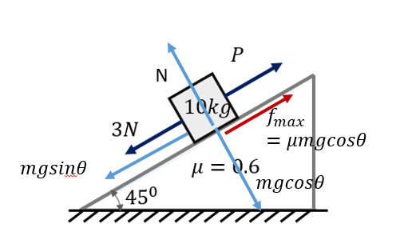

The phrase “minimum value of force $P$, such that the block doesn’t move downward”
implies a limiting equilibrium condition.
The block is just about to move downward, remains at rest, and friction therefore acts
up the plane with maximum magnitude.
First consider the case when $P = 0$.
The component of gravitational force down the plane exceeds the maximum possible
static friction, so the block accelerates downward.
To just prevent this motion, an additional force must be applied upward.
Since the required force is minimum, friction must already be at its limiting value.
Hence, the applied force must just balance the excess of
$m g \sin\theta$ over $\mu m g \cos\theta$, after accounting for the given $3\,\text{N}$ force.
Step 1: Forces and limiting condition
The block is on the verge of sliding downward, so friction acts upward with maximum value:
\[
f_{\max} = \mu N
\]
\[
N = mg\cos45^\circ
\]
\[
\text{Component of weight down the plane} = mg\sin45^\circ
\]
Step 2: Force balance along the plane
\[
P + 3 + \mu mg\cos45^\circ = mg\sin45^\circ
\]
Step 3: Substitution
\[
P + 3 + 0.6 \times 10 \times 10 \times \frac{1}{\sqrt{2}}
= 10 \times 10 \times \frac{1}{\sqrt{2}}
\]
\[
P + 3 = \frac{40}{\sqrt{2}} = 20\sqrt{2}
\]
\[
P = 20\sqrt{2} - 3
\]
Final Answer:
\[
\boxed{P_{\min} = 20\sqrt{2} - 3\ \text{N}}
\]
